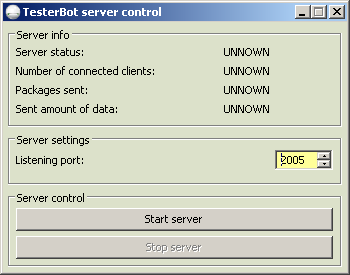
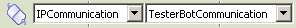
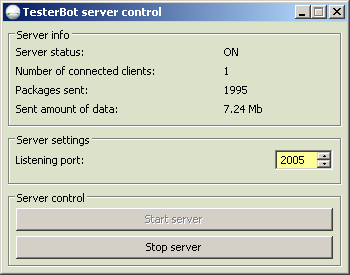
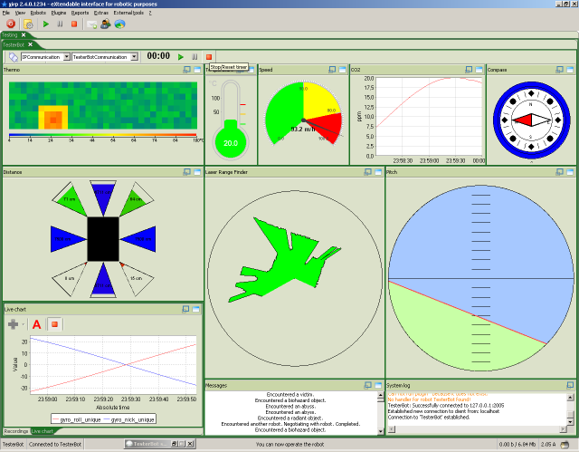

χirp TesterBot
The TesterBot is a robot simulator. Is is used by core and plugin developers for testing purposes.
The end user can use the TesterBot to get a quick view on χirp. There are pro, bot
and cms files and several default plugins to have a nearly real robot environment to
demonstrate how χirp works.
The TesterBot can be started using the TesterBot-GUI. It can be started over the Extras -> Invoke TesterBot
menu entry or the corresponding entry in the tray icon context menu.

The TesterBot is a simple server. A connection is established using TCP/IP. You can change
the servers listening port in the GUI. The server is started clicking the Start server
button. It can be stopped clicking the Stop server button.

Several more or less usefull informations are shown in the upper half of the TesterBot GUI.
If you have connected the TesterBot to the TesterBot server, the application will start to work.
The sensor plugins will show the random values generated by the TesterBot server.
The picture below shows the TesterBot GUI while a TesterBot is connected.

The picture below shows the application, TesterBot and assocciated plugins in action.
